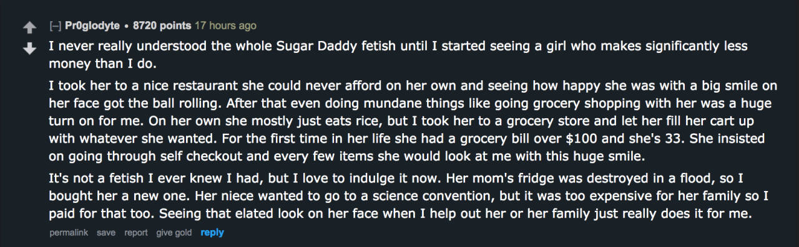

gendernihilistanarchocommunist:
…i did not expect to be touched while skimming a reddit thread on fetish origin stories
that dudes fetish is called: being a loving and caring dude
straight guy: *has a human emotion*
straight guy: this…this is a fucking good fetish my dudes!!wait a second. Sugar daddy, DD/lg, raceplay, breeding, teacher crush…
While we’re looking at ruins of the old order, is the next generation relegitimating the kyriarchy in kink lifestyle idiom?
That is exactly what the radfems worried about in the 80s and they weren’t wrong
This is really the Most Predictable Thing, right?
Turns out that cultural scripts are actually powerful, and tons of people want to live out the familiar roles and stories that have already defined their preference suites. If we tell them “the old cultural scripts are Shameful, and we will mock you and torment you for hewing to them instead of being a Good Atomized Modern – except in the context of sexual practice, which is a protected domain where no one is allowed to judge anything – ”
– what the hell did you think was going to happen?